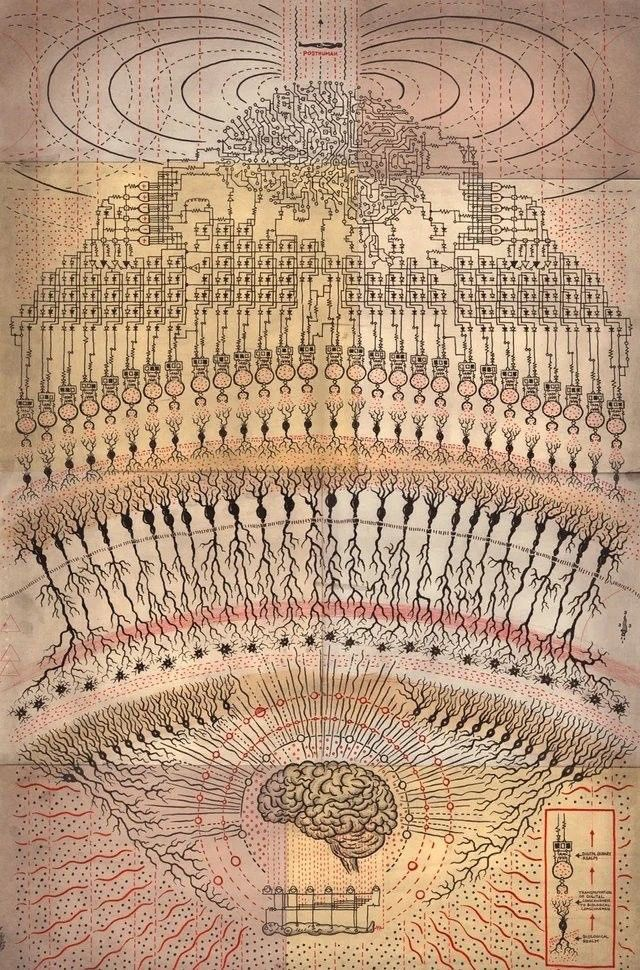

✦ A Field Guide to Inner Space · Brain · Psychology · Neuroscience
The Mind
The strangest country we will ever map is the one doing the mapping. What the brain is, how it builds the world, and why an ancient organ aches inside a modern life — read beside the contemplatives who studied it without instruments.
Fields7
Entries—
RegisterScience ✕ Sufi-Stoic

Plate I · the branching neuron, drawn before the photograph